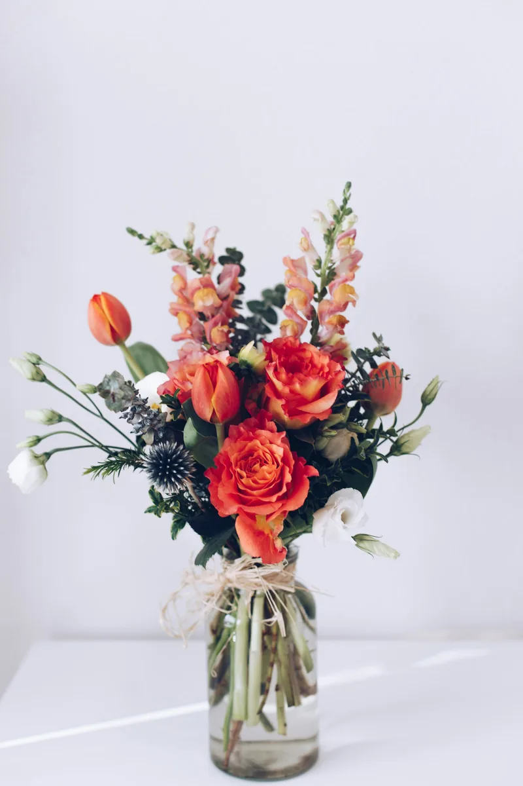

01
Fresh flowers, made to order
Daily bouquets and arrangements in roses, lilies, tulips, sunflowers and seasonal blooms, plus tropical and exotic flowers when available.
- Dozen roses, fresh flower bouquets and dish gardens
- Tropical and exotic flowers
- Seasonal arrangements for home and office
Fresh Flowers from $75.00 CAD. Dozen Roses $84.00 CAD. Delivery charge not included.